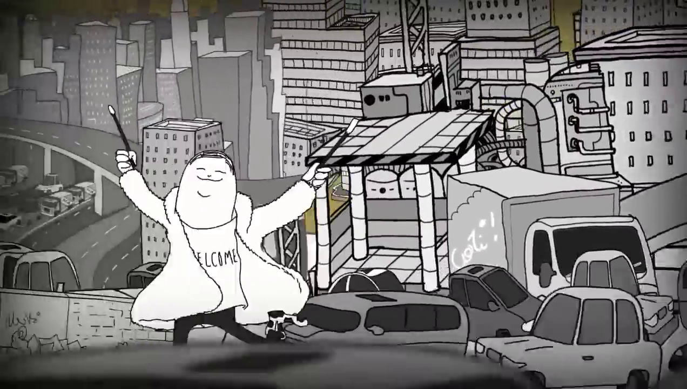

As cidades
Na parte final do vídeo, Man finalmente chega na cidade. O criador do vídeo passa a mensagem de que a cidade é um lugar ruim, feio, sujo, doente, caótico etc.
As cidades são a maior invenção da humanidade. Antes da cidade, o homem vivia muito menos, era mais pobre, mais fraco e doente. Não passava dos 25 anos de idade. Até hoje podemos ir até regiões da África onde não há cidades e uma pessoa com 30 anos de idade é considerada "velha".
As cidades nos deram proteção contra o clima, contra os mares e rios, contra a neve e até contra nós mesmos. As cidades precisam de tecnologia, de alimento, de transporte, de governos e leis que ajudam a nossa sociedade a ser o que é, e melhorar.
As cidades são também a nossa casa. Quando nos perguntam de onde nós somos, respondemos falando o nome da nossa cidade. Então, precisamos gostar da nossa cidade. Se não for possível gostar dela, mudamos para outra que possamos chamar de nossa, e nela iremos viver nossa vida da melhor maneira possível.